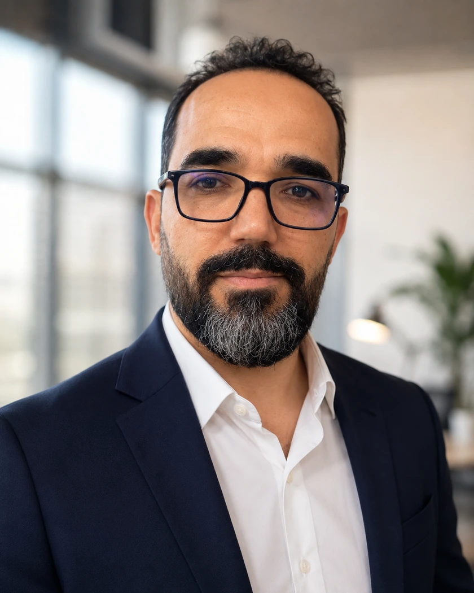
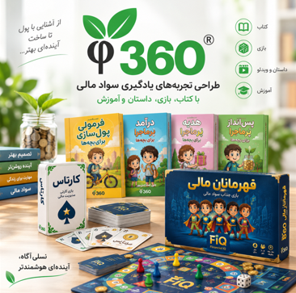

علی اسماعیلپور
مدیر تحول دیجیتالبا تمرکز بر داده و هوش تجاری
با بیش از دو دهه تجربه در نقطه اتصال فناوری، کسبوکار، فرایند و داده؛ از توسعه نرمافزار و اجرای پروژههای دیجیتالسازی تا طراحی محصولات دادهمحور و راهکارهایی که تصمیمگیری و عملیات سازمانی را بهبود میدهند.

درباره علی اسماعیلپور
مدیر تحول دیجیتال با تمرکز بر داده و هوش تجاری
مسیر حرفهای من از سال ۱۳۷۸ با نرمافزار، پایگاه داده و محصولات دیجیتال آغاز شد و در ادامه به مدیریت پروژههای دیجیتالسازی و مکانیزاسیون، تحلیل و ساختاردهی داده، مدیریت فناوری و طراحی محصول گسترش یافت.
مزیت اصلی من توان کار در مرز کسبوکار و فناوری است؛ میتوانم مسئله را از منظر فرایند و ارزش کسبوکاری بفهمم و در عین حال درباره نرمافزار، داده، پایگاه داده و اجرای فنی با تیم متخصص گفتوگو و تصمیمگیری کنم.
تجربه نشر، سواد مالی و محصولات آموزشی نیز برای من فقط فعالیت محتوایی نبوده؛ تمرینی بلندمدت در مدیریت جریان دانش، طراحی تجربه، هماهنگی ذینفعان و تبدیل محتوا به محصول بوده است.
در کنار تجربه اجرایی، تحصیلاتم در مهندسی نرمافزار، مدیریت اجرایی، MBA بازار سرمایه و مدیریت فناوری اطلاعات، نگاه من را به تصمیمگیری مدیریتی و تحول دیجیتال تکمیل کرده است.
هویت حرفهای من
هویت حرفهای من بر سه ستون استوار است: فهم کسبوکار و فرایند، کار با داده برای تصمیمگیری، و توان اجرایی در نرمافزار و محصول.
تحول دیجیتال و فرایند
تحلیل مسئله سازمانی، بازطراحی فرایند و تبدیل عملیات دستی یا پراکنده به جریان کاری دیجیتال، قابل ردیابی و قابل اندازهگیری.
داده و هوش تجاری
از گردآوری و ساختاردهی داده تا تحلیل و تبدیل آن به اطلاعاتی که بتواند تصمیم مدیریتی، شناخت بازار و طراحی محصول را پشتیبانی کند.
نرمافزار و محصول
ریشه فنی در توسعه نرمافزار و پایگاه داده، همراه با تجربه ایدهپردازی، تحلیل نیاز، مدیریت تیم و رساندن محصول از مفهوم تا اجرا.
دیجیتالسازی و مکانیزاسیون اسناد سازمانی
مدیریت پروژههای تبدیل انبوه پروندههای کاغذی به آرشیو دیجیتال، با تیمهای ۱۵ تا ۲۰ نفره و ترکیبی از نرمافزار اختصاصی، طراحی فرایند و نوآوریهای عملیاتی برای افزایش سرعت، دقت و محرمانگی اطلاعات.
پروژههای فناوری و محصولات دیجیتال
این پروژهها نشان میدهند نقش من فقط در اجرای فنی خلاصه نشده است؛ در بسیاری از آنها از ایده و تحلیل مسئله تا مدیریت پروژه، داده، نرمافزار و رساندن محصول به خروجی قابل استفاده درگیر بودهام.


نرم افزار ارتباط با مشتریان آسمان
نقش فنی من: Product Owner و مدیر پروژه، تحلیل و مدلسازی فرایند CRM، تحلیل نیازمندی، طراحی Schema پایگاه داده، مدیریت تیم Developer، آزمون و آمادهسازی Release و پیگیری ثبت نرمافزار.
ارزش فنی ایجادشده: دیجیتالسازی چرخه ارتباط با مشتری و تبدیل سوابق پراکنده تعاملات به یک مدل داده متمرکز برای پیگیری مشتری، فروش و خدمات.


نرم افزار قصه های ماندگار
نقش فنی من: Product Owner و مدیر پروژه، طراحی Taxonomy و Metadata محتوا، توسعه PHP و Database، Data Gathering/Data Entry و طراحی منطق Recommendation مبتنی بر تطبیق ویژگیهای فرد با موضوعات داستان.
ارزش فنی ایجادشده: ساخت یک مخزن ساختیافته با بیش از ۴۵۰۰ داستان و ایجاد لایه پیشنهاد محتوا بر پایه ارتباط ویژگیهای مخاطب با برچسبها و موضوعات داستانی.

حوزههای همکاری
تمرکز من بر مسئولیتها و پروژههایی است که نیازمند پیوند کسبوکار، فرایند، داده و فناوری باشند؛ نه صرفاً اجرای یک ابزار منفرد.
تحول دیجیتال و مکانیزاسیون
تحلیل وضعیت موجود، بازطراحی فرایند، دیجیتالسازی عملیات و مدیریت اجرای راهکارهایی که کار سازمان را سادهتر، قابل ردیابیتر و اثربخشتر میکنند.
داده و هوش تجاری
طراحی ساختار داده، تحلیل اطلاعات، پژوهش دادهمحور و توسعه داشبورد یا مدلهای تصمیمیار برای تبدیل داده به بینش مدیریتی.
نرمافزار، محصول و مدیریت اجرا
تحلیل نیاز، طراحی محصول دیجیتال، مدیریت تیم توسعه و هدایت پروژه از ایده تا استقرار؛ با توان گفتوگو با هر دو سوی کسبوکار و تیم فنی.
آزمایشگاه ایدهها
ایدهها، نمونههای اولیه و محصولات خلاقانهای که بخشی از آنها هنوز در حال توسعهاند؛ فضایی برای آزمودن پیوندهای تازه میان فناوری، دانش، آموزش و طراحی محصول.

فی ۳۶۰| تجربههای یادگیری سواد مالی (1396-تاکنون)
محصولات سواد مالی فی ۳۶۰ شامل مجموعهای از بازیهای آموزشی مانند قهرمانان مالی (FiQ) و کارتآس، کتابهای داستانی و آموزشی سواد مالی، و برنامههای آموزش کارگاهی است که برای گروههای سنی مختلف طراحی شدهاند. هدف فی ۳۶۰ ایجاد نسلی آگاه و توانمند است که بتواند از سالهای نخست زندگی، تصمیمهای مالی بهتر بگیرد و آینده اقتصادی خود را هوشمندانهتر بسازد.

مدیریت طبیعی | BioManagement (1405)

کتاب آهسته و پیوسته بخرید (1405)

کارتآس - بازی رومیزی کارت و تاس (1405)

بازی رومیزی قهرمانان مالی - FiQ Heroes (1405)

پزا - بستههای غذایی خشک (1404)

نقشه دانشی کتاب (1382)
هیچ کتابی از صفر شروع نمیشود. پشت هر کتاب، کتابها، آدمها و فکرهایی هستند که روی شکلگیری آن اثر گذاشتهاند.
«نقشه جریان دانش» این ارتباطهای پنهان را پیدا میکند و نشان میدهد:
-یک کتاب از چه کتابهایی الهام گرفته است؛
-کدام نویسندگان روی فکر یکدیگر اثر گذاشتهاند؛
-ناشران در چه مسیرهای فکری حرکت میکنند؛
-و ایدهها چگونه از یک حوزه به حوزه دیگر منتقل میشوند.
این سامانه فقط نمیشمارد که یک کتاب چند بار مورد استفاده قرار گرفته؛ بلکه داستان حرکت دانش را نشان میدهد؛ اینکه فکرها از کجا آمدهاند، چگونه تغییر کردهاند و به کجا رسیدهاند.
پایه اولیه این ایده و نمونه عملی آن در سال ۲۰۰۳ در مؤسسه پارسا و با راهبری جناب دکتر محمد سمیعی ایجاد شد؛ پروژهای زودهنگام که با وجود اجرای اولیه، تاکنون به ظرفیت کامل خود نرسیده است.

انگشتر چند گوهر (1405)

مجموعه ویدئویی جهش کوانتومی

کتابهای کودک و نوجوان
بیش از دو دهه تجربه در تولید و انتشار دانش
بیش از دو دهه فعالیت در نشر برای من تجربهای عملی در مدیریت یک زنجیره چندمرحلهای بوده است: هماهنگی پدیدآورندگان، ویرایش و آمادهسازی، طراحی، تولید، پیگیری و انتشار. این سابقه امروز بهعنوان بخشی از تجربه من در مدیریت فرایند، ذینفعان و محصولات دانشی معنا پیدا میکند.
مقالات
نمونههایی از پژوهش و نوشتارهای تحلیلی من در موضوعات فناوری، بازار، مدیریت و یادگیری.

بررسی صنعت بانک در ایران - 1393

گروه مباحثاتی چندرسانهای - 1382

سفر آرمان در سرزمین دانش - 1405
گواهینامهها و افتخارات
لوح تقدیر
برای نرمافزار جامع موفقیت

دومین جشنواره ملی رسانههای دیجیتال
وزارت فرهنگ و ارشاد اسلامی
لوح افتخار
برای جستجوگر سایتهای قرآنی
سومین جشنواره بینالمللی رسانههای دیجیتال
وزارت فرهنگ و ارشاد اسلامی
عنوان افتخاری
چهره برتر

نخستین جشنواره چهرههای برتر فناوری اطلاعات و ارتباطات استان قم
استانداری قم
ثبت اختراع
اختراع دستگاه «آرشيو هوشمند لوح فشرده يا كيف دی وی دی هوشمند (Smart DVD Pack)»
اختراع دستگاه «دارو افزار(يادآور هوشمند زمان مصرف دارو)»

اداره ثبت مالکیتهای صنعتی
جمهوری اسلامی ایران
لوح تقدیر
برای طرح برگزیده نوآوری
استانداری استان قم
استاندار قم
عضو کانون اهل قلم
با بیش از 17 کتاب در نقش های مؤلف، مترجم، مصحح و ویراستار

مؤسسه خانه کتاب و ادبیات ایران
معاونت فرهنگی وزارت فرهنگ و ارشاد اسلامی
عضو صندوق اعتباری هنر
در رده نویسندگان

وزارت فرهنگ و ارشاد اسلامی
دارای پروانه فنی مهندسی
و همچنین جواز تأسيس واحد فني و مهندسي

وزارت صنعت ، معدن و تجارت
عضو انجمن انفورماتیک ایران

وزارت علوم تحقیقات و فناوری
گواهینامه
اصول بازار سرمایه - 1403

سازمان بورس و اوراق بهادار
ICMC - گواهینامههای حرفه ای بازار سرمایه
گواهینامه
کارشناسی عرضه و پذیرش - 1400
سازمان بورس و اوراق بهادار
ICMC - گواهینامههای حرفه ای بازار سرمایه
گواهینامه
تحلیلگری بازار سرمایه - 1400
سازمان بورس و اوراق بهادار
ICMC - گواهینامههای حرفه ای بازار سرمایه
گواهینامه
مدیریت نهادهای بازار سرمایه - 1400
سازمان بورس و اوراق بهادار
ICMC - گواهینامههای حرفه ای بازار سرمایه
گواهینامه
بیوانفورماتیک - تحلیل داده های زیستی - 1403

مکتبخونه
دکتر علی شریفی زارچی
گواهینامه
مربیگری و تدریس در حوزه سواد مالی - 1403

خانه خلاق و نوآوری ترمه دانشگاه تهران
باشگاه مهارت آموزی کودک کارن
Course Certificate
Personal & Family Financial Planning - 2020

Coursera
UF - University of Florida
International Seminar
Management Accounting & Business Analytics - 2024

CMA - Regional Director of ICMA Australia & New Zeland
MaliSara
Certificate of Participation
Machine Learning Course - 2023

IMT College
Mohammadreza Momeni
گواهینامه پایان دوره
دوره آموزشی جامع معامله گری طلا

مکتبخونه
محمدصادق میرزایی
دنبال علی اسماعیلپور دیگری هستید؟
برای جلوگیری از اشتباه در شناسایی و تفکیک هویت حرفهای افراد همنام، صفحهای جداگانه ساختهام تا هر «علی اسماعیلپور» با سابقه مستقل خودش معرفی شود.
برای یک گفتوگوی حرفهای در ارتباط باشیم
اگر درباره تحول دیجیتال، داده و هوش تجاری، مدیریت محصول یا یک پروژه نرمافزاری و سازمانی صحبت دارید، مستقیم پیام بدهید. بهترین نقطه شروع، یک مسئله واقعی کسبوکار است.